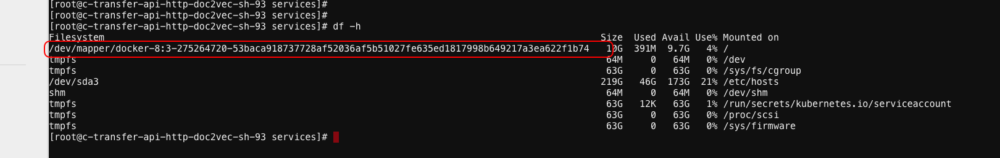

技术002K生产TroubleMaking
技术002K生产TroubleMaking¶
线上问题排查记录
k8s连接docker超时Timeout trying to communicate with docker during initialization, will retryAug 17 19:32:55 103-35-33-sh-100-C03 dockerd: http: Accept error: accept unix /var/run/docker.sock: accept4: too many open files; retrying in 1sA：无法重启docker，只能重启机器了
通过强制删除Pod时（–grace-period=0 –force），注意可能会导致该pod中的容器一直存在物理机上，因此，需要登录到物理机上强制通过docker命令删除掉，但是删除掉这个命令后，如果重新调度到该机器上，会出现问题，因此，通过crictl来删除试试。很可能程序处于D状态卡死了，重启系统。详见文章：Docker stop或者Docker kill为何不能停止容器 https://mp.weixin.qq.com/s/eZCi73pOFq0sSoMYSVujZw
无法部署新的pod和删除pod解决办法：将node不可调度，然后重启docker即可
Readiness probe errored: rpc error: code = DeadlineExceeded desc = context deadline exceeded[10.126.53.8 docker://18.6.1 3.10.0-327.el7.x86_64]err：Type:Warning Reason:Unhealthy Message:Readiness probe errored: rpc error: code = DeadlineExceeded desc = context deadline exceeded Type:Warning Reason:Unhealthy Message:Readiness probe failed: cannot exec in a stopped state: unknown containers with unready status: [serving-stgy-rcmdassy-master-132-image] [10.126.53.16 docker://18.6.1 3.10.0-327.el7.x86_64]-0/130 nodes are available: 1 node(s) were not ready, 1 node(s) were out of disk space, 14 Insufficient memory, 31 Insufficient cpu, 97 node(s) didn’t match node selector.Readiness probe failed: grpc: the client connection is closing: unknown57a62e0c054bfa98677c0016ee1f8 ‘sh /home/services/panda/bin/check_port_and_done.sh 7060’ from runtime service failed: rpc error: code = DeadlineExceeded desc = context deadline exceeded好几个服务出现这样的问题，将机器内核从3.10.0-327.el7.x86_64升级至3.10.0-957.el7.x86_64即可。
机器的磁盘空间无法释放。重启机器。
devops.transfer-api-http-doc2vec该服务只用了0.5个CPU，当CPU使用率到达70%，开始出现了502响应7. 20190903发现物理机的实例和k8s的实例的nginx权重总是一样的，物理机的qps老是降不下来，后来才发现用8台nginx集群中，有一半机器上面的默认路由不存在，无法和容器IP通信，后来添加上默认路由问题就解决了
一个nodejs的服务，分配了一个CPU，在望京机房可以启动，但是在沙河机房启动不了，必须分配8C才能启动。因为程序默认获取系统的CPU，沙河版本是1.11，lxcfs没有起作用，望京版本是1.13.5，lxcfs起作用了，因此，在程序中显式指定程序使用的CPU核数即可。
core-dns有问题，没起来解决方案：镜像拉取不了，镜像地址 gcr.io/google_containers/k8s-dns-kube-dns-amd64:1.14.1
etcd宕机了解决方案：etcd重启
coredns宕了，镜像拉不下来，重启不了
calico网络不通解决方案：以下3个网段必须一样kube-apiserver: –pod-network-cidrkube-proxy: –cluster-cidrkube-controller-manager: –cluster-cidr
在一台物理机上所有的docker容器磁盘大小都是10G解决方案：10.103.32.157,容器中所有的磁盘空间都是10G
docker的配置文件cat daemon.json
{ "authorization-plugins": [], "data-root": "", "dns": [], "dns-opts": [], "dns-search": [], "exec-opts": [], "exec-root": "", "experimental": false, "storage-driver": "devicemapper", "labels": [], "live-restore": true, "log-driver": "", "log-opts": {}, "mtu": 0, "pidfile": "", "cluster-store": "", "cluster-store-opts": {}, "cluster-advertise": "", "max-concurrent-downloads": 3, "max-concurrent-uploads": 5, "default-shm-size": "64M", "shutdown-timeout": 15, "debug": false, "hosts": [], "log-level": "", "swarm-default-advertise-addr": "", "api-cors-header": "", "selinux-enabled": false, "userns-remap": "", "group": "", "cgroup-parent": "", "default-ulimits": {}, "init": false, "init-path": "/usr/bin/docker-init", "ipv6": false, "iptables": true, "ip-forward": false, "ip-masq": false, "userland-proxy": false, "userland-proxy-path": "/usr/bin/docker-proxy", "ip": "0.0.0.0", "bridge": "", "bip": "", "fixed-cidr": "", "fixed-cidr-v6": "", "default-gateway": "", "default-gateway-v6": "", "icc": false, "raw-logs": false, "allow-nondistributable-artifacts": [], "registry-mirrors": [], "seccomp-profile": "", "insecure-registries": [], "no-new-privileges": false, "default-runtime": "runc", "oom-score-adjust": -500, "runtimes": {}}
更改配置如下：
{ "authorization-plugins": [], "data-root": "", "dns": [], "dns-opts": [], "dns-search": [], "exec-opts": [], "exec-root": "", "experimental": false, "storage-driver": "overlay2", "storage-opts": [ "overlay2.override_kernel_check=true" ], "labels": [], "live-restore": true, "log-driver": "", "log-opts": {}, "mtu": 0, "pidfile": "", "cluster-store": "", "cluster-store-opts": {}, "cluster-advertise": "", "max-concurrent-downloads": 3, "max-concurrent-uploads": 5, "default-shm-size": "64M", "shutdown-timeout": 15, "debug": true, "hosts": [], "log-level": "info", "swarm-default-advertise-addr": "", "api-cors-header": "", "selinux-enabled": false, "userns-remap": "", "group": "", "cgroup-parent": "", "default-ulimits": {}, "init": false, "init-path": "/usr/bin/docker-init", "ipv6": false, "iptables": true, "ip-forward": false, "ip-masq": false, "userland-proxy": false, "userland-proxy-path": "/usr/bin/docker-proxy", "ip": "0.0.0.0", "bridge": "", "bip": "", "fixed-cidr": "", "fixed-cidr-v6": "", "default-gateway": "", "default-gateway-v6": "", "icc": false, "raw-logs": false, "allow-nondistributable-artifacts": [], "registry-mirrors": [], "seccomp-profile": "", "insecure-registries": [], "no-new-privileges": false, "default-runtime": "runc", "oom-score-adjust": -500, "runtimes": {}}
更换docker的驱动后并且重启docker即可。